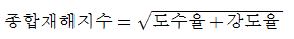
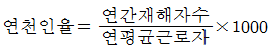
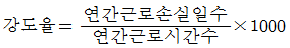
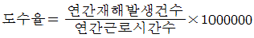
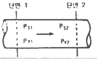

산업위생관리산업기사 (2013-03-10 기출문제)
1과목: 산업위생학 개론
1. 다음 중 신체적 결함과 부적합한 작업이 잘못 연결된 것은?
- 간기능 장애 - 화학 공업
- 편평족 - 앉아서 하는 작업
- 섬계항진 - 격심작업, 고소작업
- 고혈압 - 이상기온, 이상기압에서의 작업
(정답률: 86%)

2. 공장의 기계 시설을 인간공학적으로 검토함에 있어서 준비단계를 가장 적절하게 설명한 것은?
- 인간-기계 관계의 구성인자의 특성을 명확히 알아낸다.
- 공장설계에 있어서의 기능적 특성, 제한점을 고려한다.
- 인간-기계 관계 전반에 걸친 상황을 실형적으로 검토 한다.
- 각 작업을 수행하는데 필요한 직종간의 연결성을 고려한다.
(정답률: 72%)
3. 무게 10kg의 물건을 근로자가 들어 올리려고 한다. 해당 작업조건의 권고기준(RWL)이 5kg이고, 이동거리가 20cm일 때 중량물 취급지수(LI)는 얼마인가? (단, 1분 2회씩 1일 8시간을 작업한다.)
- 1
- 2
- 3
- 4
(정답률: 82%)
4. 작업적 노출기준에 피부(Skin) 표시가 첨부되는 물질이 있다. 다음 중 피부표시를 첨부하는 경우가 아닌 것은?
- 옥탄올-물 분배계수가 낮은 물질인 경우
- 반복하여 피부에 도포했을 때 전신작용을 일으키는 물질인 경우
- 손이나 팔에 의한 흡수가 몸 전체 흡수에 지대한 영향을 주는 물질인 경우
- 동물의 급성중독 실험결과 피부흡수에 의한 치사량(LD50)이 비교적 낮은 물질인 경우
(정답률: 73%)
5. 1940년대 일본에서 “이타이이타이병”으로 인하여 수많은 환자가 발생, 사망한 사례가 있었는데 이는 다음 중 어느 물질에 의한 것인가?
- 납
- 크롬
- 수은
- 카드뮴
(정답률: 82%)
6. 다음 중 피로의 검사 및 측정방법에 있어 생리적 방법에 해당하지 않는 것은?(오류 신고가 접수된 문제입니다. 반드시 정답과 해설을 확인하시기 바랍니다.)
- 근력
- 호흡순환기능
- 연속반응시간
- 대뇌피질활동
(정답률: 20%)
7. 다음 중 미국산업위생학술원(AAIH)에서 채택한 산업위생 전문가가 지켜야 할 윤리강령의 구성이 아닌 것은?
- 전문가로서의 책임
- 국가에 대한 책임
- 근로자에 대한 책임
- 기업주와 고객에 대한 책임
(정답률: 85%)
8. 다음 중 피로를 일으키는 인자에 있어 외적 요인에 해당하는 것은?
- 적응 능력
- 영양 상태
- 숙련 정도
- 작업 환경
(정답률: 72%)
9. 생산성 향상을 위해 기계와 작업대의 높이를 조절하고자 할 때 다음 중 작업자의 신체로 부터 일할 수 있는 최대 작업역에 관한 설명으로 옳은 것은?
- 작업자가 작업할 때 시선이 닿는 범위
- 작업자가 작업할 때 상지(上肢)를 뻗어서 닿는 범위
- 작업자가 작업할 때 사지(四肢)를 뻗어서 닿는 범위
- 작업자가 작업할 때 아래팔과 손으로 조작할 수 있는 범위
(정답률: 68%)
10. 다음 중 작업성 질환과 가장 관련이 적은 것은?
- 근골격계 질환
- 진페증
- 노인성 난청
- 악성중피종
(정답률: 87%)
11. 다음 중 재해통계지수를 잘못 나타낸 것은?




(정답률: 62%)
12. 다음 중 생무학적 측정(모니터링)의 필요성과 가장 거리가 먼 것은?
- 채용 전 스크리닝 검사
- 노출량에 따른 작업 조정
- 중독에 의한 치료대책 수립
- 작업장 내 유해물질의 공기 중 농도 측정
(정답률: 25%)
13. 우리나라 노출기준에 있어 충격소음의 1일 노출횟수가 100회일 때 해당하는 충격소음의 강도 기준은 얼마인가?
- 120dB(A)
- 130dB(A)
- 140dB(A)
- 150dB(A)
(정답률: 69%)
14. 다음 중 입자상 물질의 호흡기 내 주요 침착 메커니즘이 아닌 것은?
- 충동
- 침강
- 확산
- 흡수
(정답률: 47%)
15. 최대 육체적 작업능력이 16kcal/min인 남성이 8시간 동안 피로를 느끼지 않고 일을 하기 위한 작업강도는 어느 정도인가?
- 12kcal/min
- 5.3kcal/min
- 4kcal/min
- 3.4kcal/min
(정답률: 66%)
16. 다음 중 피부의 색소변성과 관계가 가장 먼 물질은?
- 타르(tar)
- 핏치(pitch)
- 크롬(Cr)
- 페놀(phenol)
(정답률: 64%)
17. 다음 중 작업환경 내의 감각온도를 산정하는 경우 온열 요소만으로 짝지어진 것은?
- 기온, 기습, 기압
- 기온, 기압, 작업강도
- 기온, 기습, 기류
- 기온, 기류, 작업강도
(정답률: 72%)
18. 톨루엔의 노출기준(TWA)이 50ppm일 때 1일 10시간 작업시의 보정된 노출기준은 얼마인가? (단, Brief와 Scala의 보정방법을 이용한다.)
- 35ppm
- 50ppm
- 75ppm
- 100ppm
(정답률: 68%)
19. 다음 중 산업안전보건법령상 보건관리자의 직무에 해당 하지 않는 것은? (단, 산업위생관리기사를 취득한 보건관리자에 한한다.)
- 건강장해를 예방하기 위한 작업관리
- 물질안전보건자료의 게시 또는 비치
- 사업장순회점검ㆍ지도 및 조치의 건의
- 근로자의 건강장해의 원인 조사와 재발 방지를 위한 의학적 조치
(정답률: 65%)
20. 다음 중 국제노동기구(ILO)와 세계보건기구(WHO) 공동위원회에서 정한 산업보건의 정의에 포함되어 있지 않은 내용은?
- 근로자의 건강 진단 및 산업재해 예방
- 근로자들의 육체적, 정신적, 사회적 건강을 유지증진
- 근로자를 생리적, 심리적으로 적합한 작업환경에 배치
- 작업조건으로 인한 질병예방 및 건강에 유해한 취업 방지
(정답률: 51%)
2과목: 작업환경측정 및 평가
21. 다음 중 주로 문제가 되는 전신진동의 주파수 범위로 가장 알맞은 것은?
- 1 Hz ~ 20Hz
- 2 Hz ~ 80Hz
- 100Hz ~ 300Hz
- 500Hz ~ 1000Hz
(정답률: 78%)
22. 음의 실효치가 7.0dynes/cm2일 때 음압수준(SPL)은?
- 87dB
- 91dB
- 94dB
- 96dB
(정답률: 42%)
23. 작업환경측정 분석시 발생하는 계통오차의 원인과 가장 거리가 먼 것은?
- 불안정한 기기반응
- 부적절한 표준액의 제조
- 시약의 오염
- 분석물질의 낮은 회수율
(정답률: 48%)
24. 수산화나트륨 4.0g을 0.5l의 물에 녹인 후 2N-HCI 용액으로 중화시킨다면 소요되는 2N-HCI 용액의 부피는? (단, Na 원자량은 23)
- 5ml
- 15ml
- 25ml
- 50ml
(정답률: 17%)
25. 0.001%는 몇 ppb인가?(오류 신고가 접수된 문제입니다. 반드시 정답과 해설을 확인하시기 바랍니다.)
- 100
- 1,000
- 10,000
- 100,000
(정답률: 40%)
26. [산업위생통계에서 측정방법의 정밀도는 동일집단에 속한 여러 개의 시료를 분석하여 평균치와 표준편차를 계산하고 표준편차를 평균치로 나눈 값 즉 ( )로 평가한다.] ( )안에 옳은 내용은?
- 분산수
- 기하평균치
- 변이계수
- 표준오차
(정답률: 71%)
27. 어느 가구공장의 소음을 측정한 결과 측정치가 다음과 같았다면 이 공장 소음의 중앙값(median)은? [82dB(A), 90dB(A), 69dB(A), 84dB(A), 91dB(A), 85dB(A), 93dB(A), 89dB(A), 95dB(A)]
- 91dB(A)
- 90dB(A)
- 89dB(A)
- 88dB(A)
(정답률: 79%)
28. 유량, 측정시간, 회수율 및 분석 등에 의한 오차가 각각 15, 3, 5 및 3%일 때 누적오차(%)는?
- 7.4
- 14.2
- 16.4
- 31.0
(정답률: 74%)
29. 압전 결정판이 일정한 주파수로 진동할 때 먼지로 인하여 결정판의 질량이 달라지면 그 변화량에 비례하여 진동 주파수가 달라지게 되는데, 이러한 현상을 이용한 직독식 먼지 측정기는?
- 텐들(Tyndall) 보정식 측정기
- Piezo-electric 저울식 측정기
- 전기장을 이용한 계측기
- β-선 흡수를 이용한 계측기
(정답률: 49%)
30. 미국 ACGIH에서 정희한 흉곽성 입자상 물질의 평균 입경은?
- 3㎛
- 4㎛
- 5㎛
- 10㎛
(정답률: 79%)
31. 음압이 100배 증가하면 읍압 수준은 몇 dB증가하는가?
- 10dB
- 20dB
- 30dB
- 40dB
(정답률: 65%)
32. 입자상 물질중의 금속을 채취하는데 사용되는 MCE막 여과지에 관한 설명으로 틀린 것은?
- 산에 쉽게 용해된다.
- 석면, 유리섬유 등 현미경분석을 위한 시료채취에도 이용된다.
- 시료가 여과지의 표면 또는 표면 가운데 침착된다.
- 흡습서이 낮아 중량 분석에 적합하다.
(정답률: 69%)
33. 작업장에 98dB의 소음을 발생시키는 기계 한 대가 있다. 여기서 98dB의 소음을 발생한 다른 기계 한 대를 더할 경우 소음수준은? (단, 기타 조건은 같다고 가정함)
- 99 dB
- 101 dB
- 103 dB
- 1⑤ dB
(정답률: 68%)
34. 직경분립충돌기 장치가 싸이클론 분립장치 보다 유리한 장점이 아닌 것은?
- 호흡기의 부분별로 침착된 입자 크기의 자료를 추정할 수 있다.
- 입자의 질량크기분포를 얻을 수 있다.
- 채취시간이 짧고 시료의 되튐현상이 없다.
- 흡입성, 흉곽성, 호흡성 입자의 크기별로 분포와 농도를 계산할 수 있다.
(정답률: 63%)
35. 섬유상 여과지에 관한 설명으로 틀린 것은? (단, 막여과지와 비교)
- 비싸다
- 물리적인 강도가 높다
- 과부하에서도 채취효율이 높다
- 열에강하다
(정답률: 39%)
36. 가스상 또는 증기상 물질의 채취에 이용되는 흡착제 중의 하나인 다공성 중합체에 포함되지 않는 것은?
- Tenax GC
- XAD관
- Chromosorb
- Zeolite
(정답률: 56%)
37. 작업환경 공기 중의 톨루엔 농도를 측정하였더니 8mg/m3, 5mg/m3, 7mg/m3, 3mg/m3, 4mg/m3이었다. 이들 값의 기하평균치(mg/m3)는?
- 3.07
- 4.09
- 5.07
- 6.09
(정답률: 71%)
38. 개인시료채취기(personal air sampler)로 1분당 2L의 유량으로 300분간 시료를 채취하였는데 채취 전 시료채취 필터의 무게가 80mg, 채취 후 필터무게가 86mg일 때 계산된 분진농도는?
- 10mg/m3
- 20mg/m3
- 40mg/m3
- 80mg/m3
(정답률: 55%)
39. 공기(10L)로부터 벤젠(분자량=78)을 고체 흡착관에 채취하였다. 시료를 분석한 결과 벤젠의 야은 5mg이고 탈착효율은 95%였다. 공기 중 벤젠 농도는? (단, 25℃, 1기압 기준)
- 약 1⑤ppm
- 약 125ppm
- 약 145ppm
- 약 165ppm
(정답률: 39%)
40. 측정기구의 보정을 위한 2차 표준으로서 유량 측정 시 가장 흔히 사용되는 것은?
- 비누거품미터
- 폐활량계
- 유리피스톤미터
- 로타미터
(정답률: 65%)
3과목: 작업환경관리
41. 고열작업환경에서 발생되는 열경련의 주요 원인은?
- 고온 순화 미흡에 따른 혈액순환 저하
- 고열에 의한 순환기 부조화
- 신체의 염분 손실
- 뇌 온도 및 체온 상승
(정답률: 68%)
42. 작업환경 개선을 위한 공학적인 대책과 가장 거리가 먼 것은?
- 환기
- 평가
- 격리
- 대치
(정답률: 67%)
43. 열사병(heat stroke)이 발생했을 때 가장 적절한 응급처치 방법은?
- 통풍이 잘 되는 서늘한 곳에 눞히고 포도당 주사를 준다.
- 생리식염수를 정맥주사하거나 0.1% 식염수를 마시게 한다.
- 얼음물에 물을 담가서 체온을 39℃이하로 유지시켜 준다.
- 스포츠 음료나 설탕물을 마시게 한다.
(정답률: 59%)
44. 기압으로 인한 화학적 장해(2차적인 가압현상)중 질소로 인한 마취작용은 보통 몇 기압이상에서 발생하는가?
- 2기압
- 3기압
- 4기압
- 5기압
(정답률: 64%)
45. 어떤 음원에서 10m 떨어진 곳에서의 음의 세기레벨(sound intensity level)은 89dB이다. 음원에서 20m 떨어진 곳에서의 음의 세기레벨은? (단, 점은원이고 장해물이 없는 자유 공간에서 구면상으로 전파한다고 가정한다.)
- 77dB
- 80dB
- 83dB
- 86dB
(정답률: 48%)
46. 다음 중 청력보호구인 귀마개의 장점이 아닌 것은?
- 작아서 휴대하기가 편리하다.
- 고개를 움직이는데 불편함이 없다.
- 고온에서 착용하여도 불편함이 없다.
- 짧은 시간 내에 제대로 착용할 수 있다.
(정답률: 63%)
47. 보호구 밖의 농도가 300ppm이고 보호구 안의 농도가 12ppm이었을 때 보호계수(Protention factor, PF)값은?
- 200
- 100
- 50
- 25
(정답률: 70%)
48. 이상기압 환경에 관한 설명 중 적합하지 않은 것은?
- 지구표면에서의 공기의 압력은 평균 1kg/cm2이며 이를 1기압이라고 한다.
- 수면하에서의 압력은 수심이 10m 깊어질 때마다 1기압씩 더 걸린다.
- 수심 20m에서의 절대압은 2기압이다.
- 잠함작업이나 해저터널 굴진작업은 고압환경에 해당 된다.
(정답률: 73%)
49. 고압에 의한 장해를 방지하기 위하여 인공적으로 만든 호흡용 혼합가스인 헬륨-산소혼합가스에 관한 설명으로 옳지 않은 것은?
- 호흡저항이 적다.
- 고압에서 마취작용이 강하여 심해 잠수에는 사용하기 어렵다.
- 헬륨은 체외로 배출되는 시간이 질소에 비하여 50% 정도 밖에 걸리지 않는다.
- 헬륨은 질소보다 확산속도가 크다.
(정답률: 67%)
50. 저산소증에 관한 설명으로 옳지 않은 것은?
- 저기압으로 인하여 발생하는 신체 장해이다.
- 작업장내 산소농도가 5%라면 혼수, 호흡감소 및 정지, 6~8분 후 심장이 정지한다.
- 산소결핌에 가장 민감한 조직은 뇌 특히 대뇌 피질이다.
- 정상공기의 산소함유량은 21% 정도이며 질소가 78%, 탄산가스가 1%정도를 차지하고 있다.
(정답률: 61%)
51. 가동 중인 시설에 대한 작업환경관리를 위하여 공장을 대치하는 경우, 유의할 사항으로 가장 옳은 것은?
- 일반적으로 가장 비용이 많이 드는 대책이라는 것을 유의한다.
- 일반적으로 유지 및 보수에 대한 많은 관심을 가진다.
- 2-브로모프로판에 의한 생식독성 사례를 고찰한다.
- 대응할 시설과 안전관계 시설에 대한 지식이 필요하다.
(정답률: 52%)
52. 방사선량 중 흡수선량에 관한 설명과 가장 거리가 먼 것은?
- 공기가 방사선에 의해 이온화되는 것에 기초를 둠
- 모든 종류의 이온화 방사선에 의한 외부노출, 내부노출 등 모든 경우에 적용 함
- 관용단위는 rad(피조사체 1g에 대하여 100erg의 에너지가 흡수되는 것)임
- 조직(또는 물질)의 단위 질량 당 흡수된 에너지 임)
(정답률: 35%)
53. 자외선에 대한 설명 중 옳지 않은 것은?
- 인체에 유익한 건강선은 290-315nm이다.
- 구름이나 눈에 반사되며, 대기오염의 지표로도 사용된다.
- 일명 화학선이라고 하며 광화학반응으로 단백질과 핵산분자의 파괴, 변성작용을 한다.
- 400~500nm의 파장은 주로 피부암을 유발한다.
(정답률: 44%)
54. 한랭장애 예방에 관한 설명으로 틀린 것은?
- 체온을 유지하기 위해 앉아서 장시간 작업한다.
- 금속의자 사용을 금지한다.
- 외부액체가 스며들지 않도록 방수 처리된 의복을 입는다.
- 고혈압, 심혈관 질환 및 간장 장해가 있는 사람은 한랭작업을 피하도록 한다.
(정답률: 82%)
55. 단위시간에 일어나는 방사선 붕괴율 즉 1초 동안에 3.7×1010개의 원자붕괴가 일어나는 방사선물질량을 나타내는 방사선 단위는?
- R
- Ci
- rem
- rad
(정답률: 51%)
56. 1촉광의 광원으로부터 단위 입체각으로 나가는 광속의 단위는?
- 루멘(Lumen)
- 후트캔들(Foot-candle)
- 룩스(Lux)
- 람버트(Lambert)
(정답률: 70%)
57. 다음 중 전리 방사선에 속하는 것은?
- 가시광선
- X선
- 적외선
- 라디오파
(정답률: 72%)
58. 전신진동중 수직진도에 있어서 인체에 가장 큰 피해를 주는 진동수 범위는?
- 0~2Hz
- 4~8Hz
- 18~52Hz
- 52~76Hz
(정답률: 53%)
59. 차음재의 특성과 거리가 먼 것은?
- 상대적으로 고밀도이다.
- 기공이 많고 흡음재료로도 사용할 수 있다.
- 음에너지를 감쇠시킨다.
- 음의 투과를 저감하여 음을 억제시킨다.
(정답률: 64%)
60. 먼지의 한쪽 곧 가장자리와 다른쪽 끝 가장자리 사이의 거리를 측정함으로써 입자상물질의 크기를 과대평가할 가능성이 있는 직경은?
- Martin 직경
- Feret 직경
- 등면적 직경
- 공기역학적 직경
(정답률: 71%)
4과목: 산업환기
61. 다음 중 자연환기에 대한 설명으로 적절하지 않은 것은?
- 운전비용이 거의 들지 않는다.
- 에너지 비용을 최소화할 수 있다.
- 계절 변화에 관계없이 안정적으로 사용할 수 있다.
- 지붕 벤틸레이타, 창문, 출입문 등을 통한환기방식이다.
(정답률: 73%)
62. 다음 중 국소배기장치에서 후드를 추가로 설치해도 수비게 정압 조절이 가능하고, 사용하지 않는 후드를 막아 다른 곳에 필요한 정압을 보낼 수 있어 현장에서 가장 편리하게 사용할 수 있는 압력 균형 방법은?
- 댐퍼 조절법
- 회전수 변환
- 압력 조절법
- 안내익 조절법
(정답률: 68%)
63. 작업장내 실내 채적은 1600m3이고, 환기량이 시간당 800m3라고 하면, 시간당 공기교환횟수는 얼마인가?
- 0.5회
- 1회
- 2회
- 4회
(정답률: 34%)
64. 외부식 포집형 후드에 플렌지를 부착하면 부착하지 않은 것보다 약 몇 %정도의 필요송풍량을 줄일 수 있는가?
- 10%
- 25%
- 50%
- 75%
(정답률: 72%)
65. 다음 중 분진 및 유해화학 물질이 발생되는 작업장에 설치하는 국소배기장치 후드의 설치상 기본 유의사항으로 가장 적절하지 않은 것은?
- 최대한 발생원 부근에 설치할 것
- 발생원의 상태에 맞는 형태와 크기일 것
- 발생원 부근에 최대 제어속도를 만족하는 정상기류를 만들 것
- 작업자가 후드에 흡인되는 오렴기류 내에 들어가거나 노출되지 않도록 배치할 것
(정답률: 47%)
66. 다음 중 B 사업장의 도장 부스에서 발생된 유기용제 증기를 처리하기 위한 공기정화장치로 가장 적당한 것은?
- 흡착탑
- 전기집진기
- 여과집진기
- 원심력집진기
(정답률: 47%)
67. 다음 중 슬로트(slot)형 후드에서 슬로트 속도와 제어풍속과의 관계를 설명한 것으로 가장 옳은 것은?
- 제어풍속은 슬로트 속도에 반비례한다.
- 제어풍속은 슬로트 속도의 제곱근이다.
- 제어풍속은 슬로트 속도의 제곱에 비례한다.
- 제어풍속은 슬로트 속도에 영향을 받지 않는다.
(정답률: 39%)
68. 27℃, 1기압에서 2L의 산소 기체를 327℃, 2기압으로 변화시키면 그 부피는 몇 L가 되겠는가?
- 0.5L
- 1L
- 2L
- 4L
(정답률: 50%)
69. 다음 중 송풍기의 상사법칙에 대한 설명으로 틀린 것은?
- 송풍량은 송풍기의 회전속도에 정비례한다.
- 송풍기 풍압은 송풍기 회전날개의 직경에 정비례한다.
- 송풍기 동력은 송풍기 회전속도의 세제곱에 비례한다.
- 송풍기 풍압은 송풍기 회전속도의 제곱에 비례한다.
(정답률: 55%)
70. 다음 중 덕트내 유속에 관한 설명으로 옳은 것은?
- 덕트내 압력손실은 유속에 반비례한다.
- 같은 송풍량인 경우 덕트의 직경이 클수록 유속은 커진다.
- 같은 송풍량인 경우 덕트의 직경이 작을수록 유속은 작게 된다.
- 주물사와 같은 단단한 입자상 물질의 유속을 너무 크게 하면 덕트 수명이 단축된다.
(정답률: 55%)
71. 다음 중 일반적인 산업환기 배관 내 기류 흐름의 Reynolds수 범위로 가장 올바른 것은?
- 10-3 ~ 10-7
- 10-7 ~ 10-11
- 102 ~ 103
- 105 ~ 106
(정답률: 32%)
72. 다음 중 push-pull형 환기장치에 관한 설명으로 틀린 것은?
- 도금조, 자동차 도장공정에서 이용할 수 있다.
- 일반적인 국소배기장치 후드보다 동력비가 가장 많이 든다.
- 한 쪽에서는 공기를 불어 주고(push) 한쪽에서는 공기를 흡인(pull)하는 장치이다.
- 공정상 포착거리가 길어서 단지 공기를 제어하는 일반적인 후드로는 효과가 낮을 때 이용하는 장치이다.
(정답률: 63%)
73. 다음 중 축류송풍기 중 프로펠러 송풍기에 관한 설명으로 틀린 것은?
- 구조가 간단하고 값이 저렴하다.
- 많은 양의 공기를 값싸게 이송시킬 수 있다.
- 압력손실이 비교적 큰 곳에서도 송풍량의 변화가 적은 장점이 있다.
- 국소배기용보다는 압력손실이 비교적 작은 전체 환기용으로 사용해야 한다.
(정답률: 41%)
74. [그림]에서 Ps1=-30mmH2O, Pv2=20mmH2O, Ps2=-35mmH2O 일 때, 압력손실은 얼마인가?

- 65mmH2O
- 45mmH2O
- 15mmH2O
- 5mmH2O
(정답률: 17%)
75. 유해물질(A)이 균일하게 1시간동안 0.95L가 공기 중으로 증발되는 작업장에서 A물질 의 공기 중 농도를 노출기준(TLV-TWA 100ppm)의 50%로 유지하기 위한 전체환기의 필요한 기량은 약 얼마인가? (단, 21℃, 1기압, A 물질의 비중은 0.866, 분자량은 92.13, 안전계수는 5로 하며, ACGIH의 공식을 활용한다.)
- 164m3/min
- 259m3/min
- 359m3/min
- 459m3/min
(정답률: 34%)
76. 다음 중 분진을 제거하기 위해 사용되는 사이클론에 관한 설명으로 틀린 것은?
- 주로 원심력이 작용한다.
- 관내경이 작을수록 효율이 좋다.
- 성능에 큰 영향을 미치는 것은 사이클론의 직경이다.
- 유입구의 공기 속도가 빠를수록 분진제거효율은 나빠진다.
(정답률: 45%)
77. 다음 중 국소배기장치의 설치 및 에너지 비용 절감을 위해 가장 우선적으로 검토하여야 할 것은?
- 재료비 절감을 위해 덕트 직경을 가능한 줄인다.
- 송풍기 운전비 절감을 위해 댐퍼로 배기 유량을 줄인다.
- 후드 개구면적을 가능한 넓혀서 개방형으로 설치한다.
- 후드를 오염물질 발생원에 최대한 근접시켜 필요송풍량을 줄인다.
(정답률: 50%)
78. 다음 중 덕트 내의 풍속측정에 사용되는 측정 계기가 아닌 것은?
- 피토관
- 회전속도 측정기
- 풍차풍속계
- 열선식풍속계
(정답률: 29%)
79. 온도 50℃인 고나내부를 15m3/min의 기체가 흐르고 있을 때 0℃에서의 유량은 약 얼마인가? (단, 기압은 760mmHg로 일정하다.)
- 12.68m3/min
- 14.74m3/min
- 15.⑤m3/min
- 17.29m3/min
(정답률: 43%)
80. 27℃, 1기압에서 2L의 산소 기체를 327℃, 2기압으로 변화시키면 그 부피는 몇 L가 되겠는가?
- 0.5L
- 1L
- 2L
- 4L
(정답률: 52%)